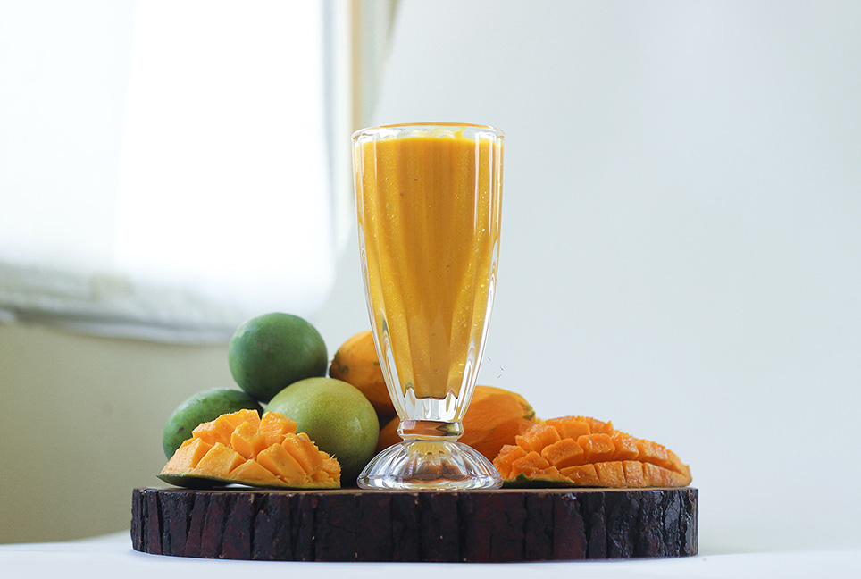
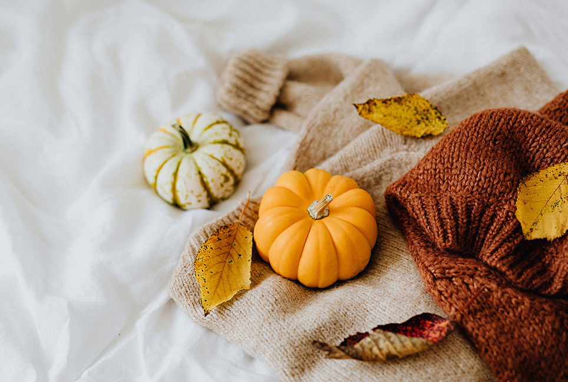

My Recipes
My Recipes are basically selected over different season. Now I have enriched my menu item with Croped Magnoes, Jackfruits etc

Cropped Mango
It is enriched with potassium. when You eat it you will get a inner peace in your mind as well as in your mouth.

Kind-Hearted Pumpkin
It is enriched with Helloween.when You eat it you will get a inner peace in your mind as well as in your mouth.

Cropped Mango
It is enriched with Yellow color.when You eat it you will get a inner peace in your mind as well as in your mouth.